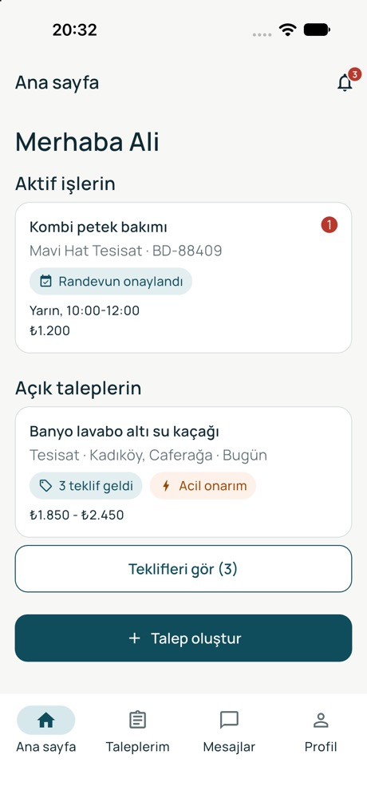
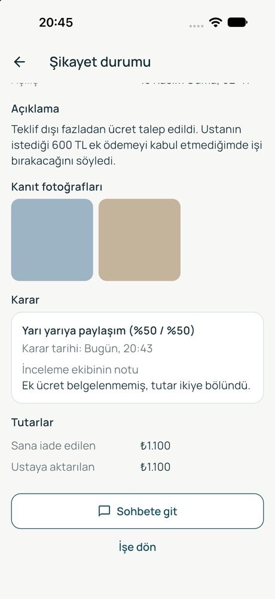

Ev tamiratı pazaryeriHome-repair marketplace
Tamirat işini anlat, teklifleri karşılaştır, güvenle öde. Describe the repair, compare offers, pay securely.
BiTadilat'ta talebini fotoğraflarla oluşturursun; belgeleri kontrol edilmiş ustalar işçilik ve malzemeyi ayrı yazarak teklif verir. Ödeme işi onaylayana kadar güvence havuzunda bekler. On BiTadilat you create a request with photos; pros whose documents have been checked send offers with labour and materials listed separately. Your payment waits in a secure hold until you confirm the work.
Önce iOS; Android sonra gelecek. Henüz mağaza bağlantısı yok.iOS first; Android will follow. There is no store link yet.

Müşteri için dört adımFour steps for customers
Aradığın ustayı sen bulmak zorunda değilsin; ustalar sana gelir.You do not have to hunt for a pro; pros come to you.
-
Talebini oluşturCreate your request
Kategoriyi seç, işi anlat, fotoğraf ekle, ilçeni yaz. Acil onarım mı planlı iş mi olduğunu belirt.Pick a category, describe the job, add photos and your district. Say whether it is an urgent repair or a planned job.
-
Teklifleri karşılaştırCompare offers
Ustalar işçilik ve malzemeyi ayrı yazar; varış aralığı ve işçilik garanti süresini (0, 3, 6 veya 12 ay) belirtir.Pros list labour and materials separately and state an arrival window and a workmanship warranty (0, 3, 6 or 12 months).
-
Kartla ödePay by card
Teklifi kabul et, 3D Secure ile öde. Para ustaya geçmez, güvence havuzunda bekler. Randevuyu onayla.Accept an offer and pay with 3D Secure. The money does not go to the pro; it waits in the secure hold. Confirm the appointment.
-
İşi onaylaConfirm the work
Usta işi bitirince onayla; para ustaya aktarılır. Sorun varsa şikayet aç.When the pro finishes, confirm and the money is paid out. If something is wrong, open a complaint.
Ustalar içinFor pros
Kendi işini yapan ustalar için talepler, teklifler ve ödeme tek yerde.Requests, offers and payment in one place for independent pros.
-
1. Başvur1. Apply
Kimlik ve meslek belgelerini yükle. Yönetici belgeleri inceler; onaylanınca "Doğrulandı" etiketi alırsın. Etiket, belgelerin incelendiğini gösterir; işin kalitesi için garanti değildir.Upload your ID and trade documents. An admin reviews them; once approved you get a "Verified" label. It shows your documents were reviewed; it is not a guarantee of work quality.
-
2. Teklif ver2. Send offers
Çalıştığın kategori ve ilçelerdeki talepleri gör. İşçilik, malzeme, varış aralığı ve garanti süresiyle teklif ver.See requests in your categories and districts. Send an offer with labour, materials, arrival window and warranty.
-
3. Ödemeni al3. Get paid
Müşteri teklifi kabul edince ödeme güvence havuzuna girer. İşi bitirince müşteri onaylar ya da 48 saat sonra, şikayet yoksa para sana aktarılır. Hizmet bedeli %10'dur ve senin tarafından kesilir.When a customer accepts your offer the payment enters the secure hold. After you finish, the customer confirms, or after 48 hours with no complaint, the money is paid out to you. The service fee is 10% and is deducted on your side.
Güvence havuzu: ne yapar, ne yapmazThe secure hold: what it does and does not do
- Kart bilgilerini uygulamadaki ödeme formuna girersin; ödeme isteğiyle Craftgate'e iletilir, BiTadilat saklamaz ve kaydetmez. Banka doğrulaması (3D Secure) bankanın sayfasında yapılır.You enter your card details in the payment form in the app; they are passed to the payment provider Craftgate with the payment request, and BiTadilat does not store or log them. Bank verification (3D Secure) happens on the bank's page.
- Para, sen onaylayana kadar ustaya geçmez. Onaylamazsan ve şikayet açmazsan usta işi bitirdikten 48 saat sonra otomatik aktarılır.The money does not reach the pro until you confirm. If you neither confirm nor complain, it is paid out automatically 48 hours after the pro finishes.
- Şikayet açarsan otomatik aktarım durur; kararı yönetici verir.If you open a complaint, the automatic payout stops and an admin decides.
Şikayet olursa kararlarIf there is a complaint, the outcomes
| KararDecision | ParaMoney |
|---|---|
| Tam iadeFull refund | Tamamı sana iade edilir; hizmet bedeli yok.All refunded to you; no service fee. |
| %50 / %50 | Yarısı sana iade, yarısı ustaya; hizmet bedeli yok.Half refunded to you, half to the pro; no service fee. |
| Ustaya aktarımPayout to pro | Şikayet reddedilir; tutar ustaya aktarılır, %10 hizmet bedeli uygulanır.Complaint dismissed; paid to the pro, 10% service fee applies. |

Sık sorulanlarFrequently asked questions
BiTadilat işi kendisi mi yapıyor?Does BiTadilat do the work itself?
Hayır. BiTadilat müşteriyle ustayı buluşturan bir pazaryeridir; işi bağımsız çalışan usta yapar.No. BiTadilat is a marketplace that connects customers and pros; an independent pro does the work.
Müşteri olarak teklifteki tutarın üzerinde ödeme yapar mıyım?As a customer, do I pay more than the offer total?
Hayır. Ödediğin tutar teklifteki toplam tutardır (KDV dahil). %10 hizmet bedeli usta tarafında kesilir.No. You pay the offer total (VAT included). The 10% service fee is deducted on the pro's side.
Ustaların doğrulanması ne demek?What does pro verification mean?
Usta, kimlik ve meslek belgeleriyle başvurur ve yönetici belgeleri inceler. Bu, belgelerin kontrol edildiği anlamına gelir; işin sonucu için bir garanti değildir.A pro applies with ID and trade documents and an admin reviews them. This means the documents were checked; it is not a guarantee of the result.
Adresim herkese görünür mü?Is my address visible to everyone?
Talepte yalnızca ilçe ve mahalle görünür. Açık adresin şifreli saklanır ve teklifi kabul edip ödeme yaptıktan sonra yalnızca işi yapacak ustaya açılır.A request shows only district and neighbourhood. Your full address is stored encrypted and is opened only to the pro doing the job, after you accept an offer and pay.
Randevuyu veya işi iptal edebilir miyim?Can I cancel the appointment or job?
İş başlayana kadar (usta adreste olsa bile) iptal edebilirsin; ödediğin tutar tam iade edilir. İş başladıktan sonra doğrudan iptal yoktur, şikayet açarsın.You can cancel until the work starts (even if the pro is already on site); what you paid is refunded in full. Once work has started there is no direct cancellation; you open a complaint.
Android var mı?Is there an Android app?
Önce iOS uygulaması çıkacak; Android sonra gelecek. Henüz yayında değil.The iOS app comes first; Android will follow. It is not published yet.
Ödeme koşullarının tamamı nerede?Where are the full payment terms?
Ödeme ve Güvence Havuzu Koşulları sayfasında iptal, iade ve şikayet kuralları yazılıdır. Metinler taslaktır ve yayından önce hukukçu tarafından incelenecektir.The Payment and Secure Hold Terms set out the cancellation, refund and complaint rules. The texts are drafts and will be reviewed by a lawyer before publication.